July 14, 2021
Brukar skruva isär min gamla trogna MacBook Pro (modell Mid-2014) åtminstone en gång per år och städa den från damm. Den blir oftast rejält mindre varm och går också mycket tystare av lite dammsugning av fläktar innuti.
Plockade som vanligt fram mitt pålitliga kit från ifixit.com och lättade på locket (nåja botten om man ska vara petig).
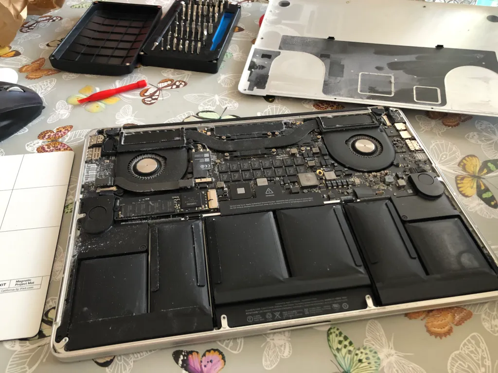
Som synes är både bottenplattan och dom två fläktarna rätt dammiga. Fram med lilla dammsugaren och försiktigt göra rent! Som vanligt inget större problem förrän jag skulle återmontera bottenplattan… Plötsligt märker jag ju att den inte går att skruva ihop igen? Va nu? Efter lite ytterligare granskning inser jag snart att batteriets celler är REJÄLT svullna!
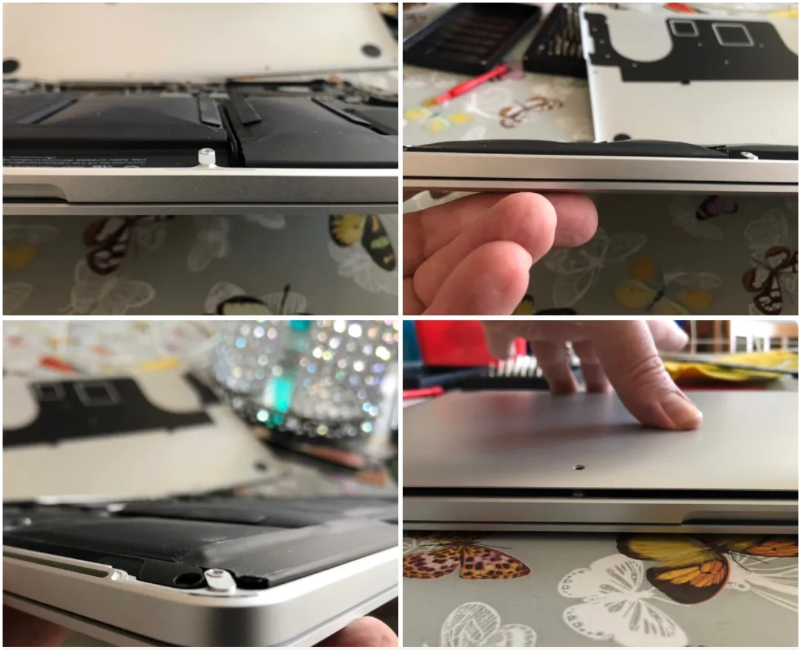
Kollar försiktigt batteriet med coconutBattery med bottenplattan lös. Visst har jag kanske tyckt batteritiden varit lite sämre men inte så dålig som svullnaden på batteriet indikerar… Men! Gammalt är det sannerligen! 139 laddcycler låter inte så mycket tycker jag och jag kör den heller inte ofta speciellt länge på bara batteri. Intressant nog håller ju coconutBattery också med om att batteristatus är ”Good”. Tydligen kan man inte bara lita på denna kontroll dock! Efter 6,5 år så har ju bevisligen batteriets celler börjat ge opp och svullnat till.
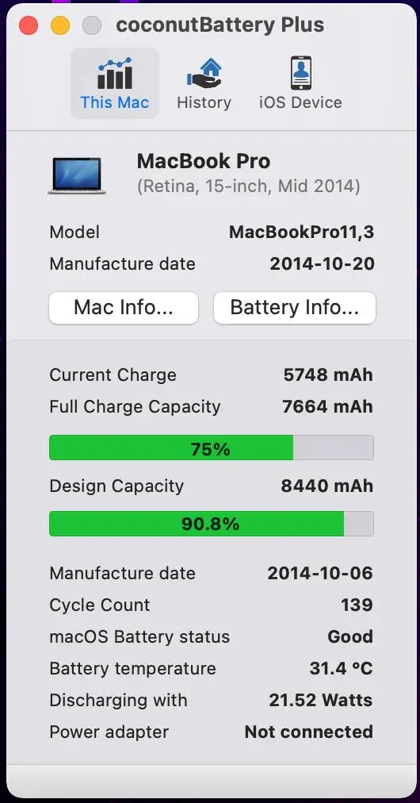
Kollar genast på ifixit och deras fantastiska guider för procedur/tips hur man reprarerar själv. Bläddrar fram min modell och får en lättare hicka när dom listat det som ”Difficult”. Ajch… Ifixits procedur handlar om att riva HELA burken i småbitar och kemiskt få bort battericellerna som sitter limmade.
Som tur är läser jag också kommentarerna under och får syn på den youtube-länk där en kraftigt förenklad procedur demonstreras. Ser dock hur dom verkar jobba väldigt hårt för att få lös batteriet och tänker att dom nog valt fel typ av tråd. Det ska såklart vara en tråd som är tvinnad/flätad och därmed kan såga effektivare tänker jag. Så dags att leta utbytesbatteri samt en tråd som kanske kan fungera som effektiv såg för att få bort limmet under battericellerna.
Enligt tips ser jag till att ladda ur battericellerna så mycket jag kan och sen hittade jag nedanstående tråd på biltema. Kraftig flätad tråd på rulle. Dags att börja mecka! 🙂
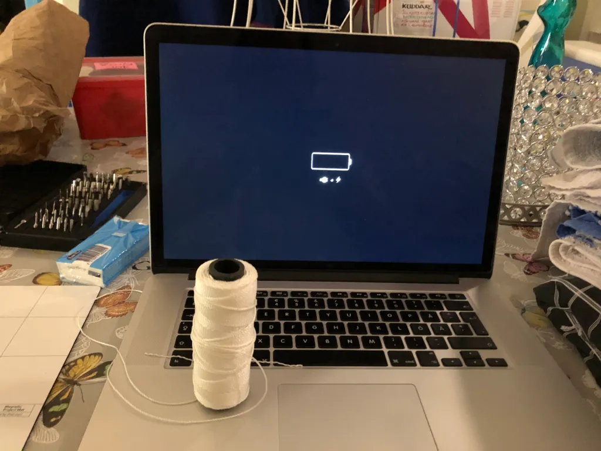
Jakten på nytt batteri visade sig bli ”spännande” (hö hö hö) då det som mycket annat är svårt att få tag på datorkomponeter i dessa pandemitider. Slutade med mitt första köp på amazon faktiskt som var dom enda som hade batteri på lager. Levererades med två passande mejslar för min datormodel vilket var lite otippat men jag har ju redan mitt ifixitkit som såklart är mycket bättre. Allt för 550,99:- och fraktfritt (tror det var för jag var ny kund).
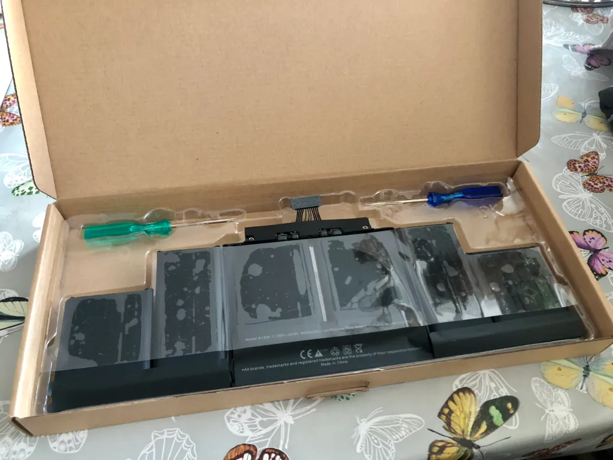
Då var det dags att börja med det kluriga! Såga loss battericellerna! Började med dom två cellerna längst till vänster och tog sedan dom två längst till höger för att sen avsluta med dom största i mitten. Visade sig med den tråd jag satsat på gå ganska lätt att såga loss limmet. Även om jag böjde batterierna lite otäckt mycket ibland. Jag var dock redo att kasta allt över räcket på balkongen ifall det skulle ta fyr. Det ÄR FARLIGA batterier i alla moderna leksaker. Vatten funkar INTE som ett effektivt släckningsmedel!
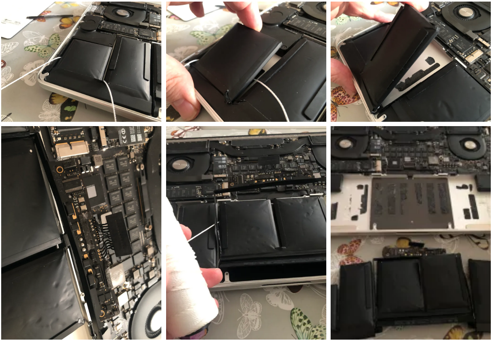
Det jag gjorde sen direkt var faktiskt att omedelbart fara med mitt gamla batteri till återvinningen. Tordes inte lita på det efter jag nu dessutom misshandlat det lite… 🙂
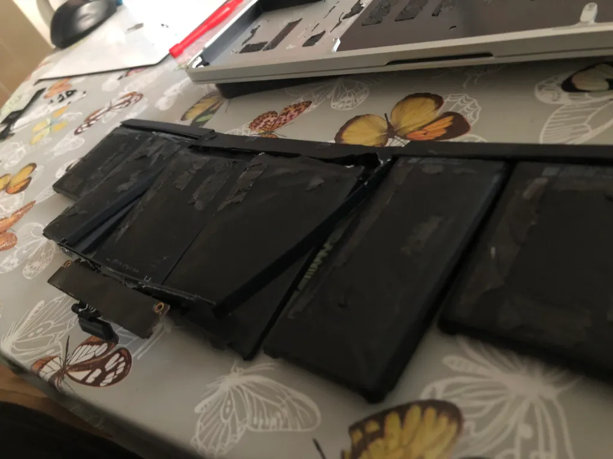
Efter en välförtjänt kaffe efter trippen till Återvinningen så var det dags för lite rengöring av dom gamla limresterna. Gnuggade mest med fingrarna (vilket inte var skönt) men det gick skapligt lätt ändå att få bort på min macbook.
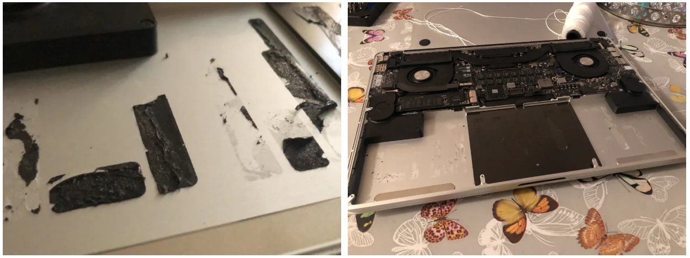
Nu var det rent nog enligt mig för att montera dit det nya batteriet. Av med skyddsplasten och bara att stoppa i! Lite pilligt men ändå relativt enkelt att få på rätt plats.
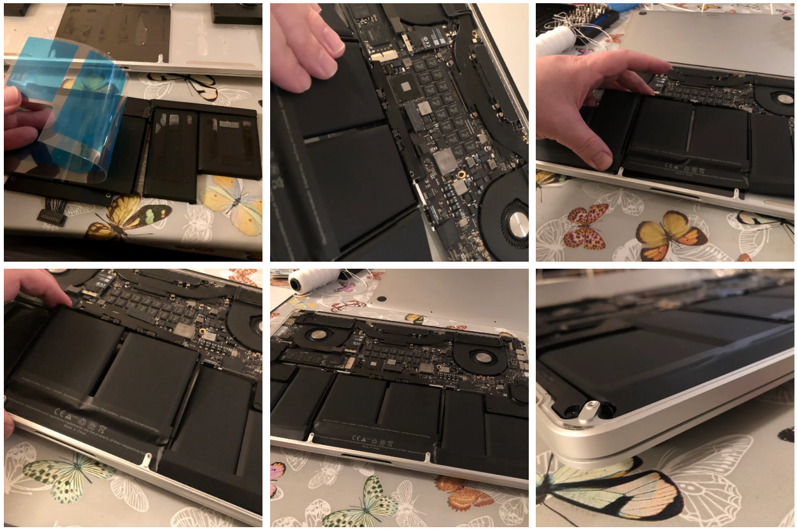
Det blev såklart en enorm skillnad. Perfekt passform! Bara att enkelt skruva på bottenplattan igen och ladda det nya batteriet fullt! Det rekommenderades också att efter det laddats fullt så ska man helt köra ut det tills datorn stannar igen för att kalibreringen ska bli rätt.
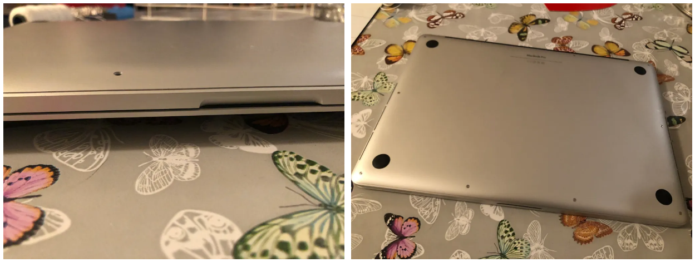
Fick nästan ny känsla med nytt batteri. Den blir obefintligt varmt mot tidigare och nu har jag väldigt mycket bättre batteritid också! Närbild på tråden jag använde och status från coconutBattery efter testkörning/kalibering! Intressant att observera att datorn rapporterar en batteritemperatur som är drygt 6 grader lägre med nya batteriet efter hårdkörning!
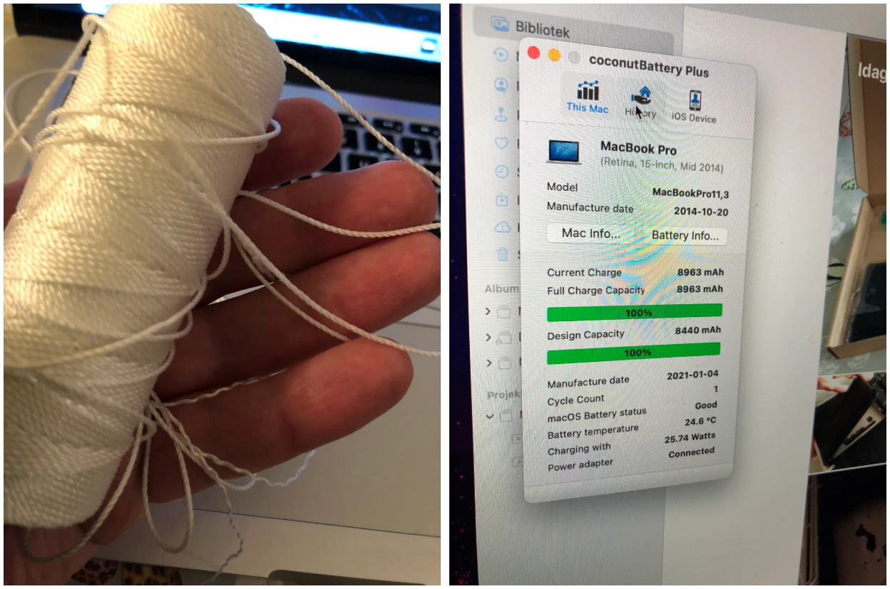
Självklart rekommenderar jag dock ingen göra detta själv som känner sig osäker. Jag har själv skruvat datorer och annan elektronik i många år men håller mig till att skruva i mina egna devices. Kul att lära sig dock och rejält go känsla när det blir bra resultat av nån timmes jobb och en väldigt låg kostnad.
Stort tack till UbhiTS på youtube och till ifixit.com för deras briljanta guider (även om den i detta fall var lite overkill på så gammal dator som min) och såklart deras överlägsna kit med verktyg!